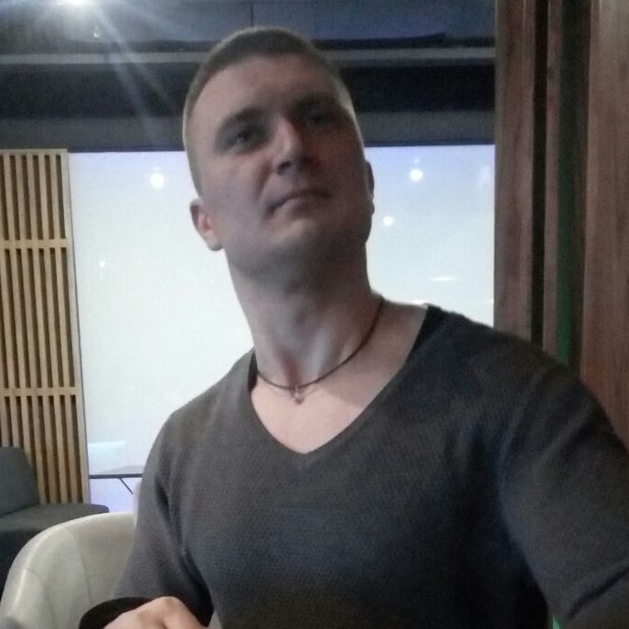

Александр Павличенко
Junior верстальщик
Давайте познакомимся

Пара слов о себе
Приветствую, я Александр Павличенко. В прошлом спортивный врач и врач судебно-медицинский эксперт, который всерьез увлекся вэб‑разработкой. Поскольку я еще продолжаю обучение, то готов сверстать сайт за символическую стоимость, но во время учебы демонстрирую высокие результаты, поэтому обещаю качественную академическую верстку, и в плане соотношения цена‑качество верстки мои услуги являются возможно лучшим вариантом.
Чем могу быть полезен
Младший верстальщик студент гарантирует Вам качественную академическую семантическую кроссбраузерную адаптивную компонентную верстку с использованием методологии БЭМ, менеджера пакетов npm с менеджером автоматизации Gulp и препроцессором Sass с такими инструментами: gulp‑plumber, gulp‑if, gulp‑sass, gulp‑postcss, postcss‑url, autoprefixer, postcss‑csso, gulp‑rename, gulp‑htmlmin, gulp‑terser, gulp‑libsqoosh, gulp‑svgmin, gulp‑stacksvg, del, browser‑sync, gulp‑html‑bemlinter, gulp‑w3c‑html‑validator.
Мои навыки
- html
- 100%
- css
- 100%
Резюме и работы
Мое резюме
Открыть страницуДемонстрация навыков
Открыть страницуАдаптивная верстка
С использованием вышеперечисленных методологий и инструментария